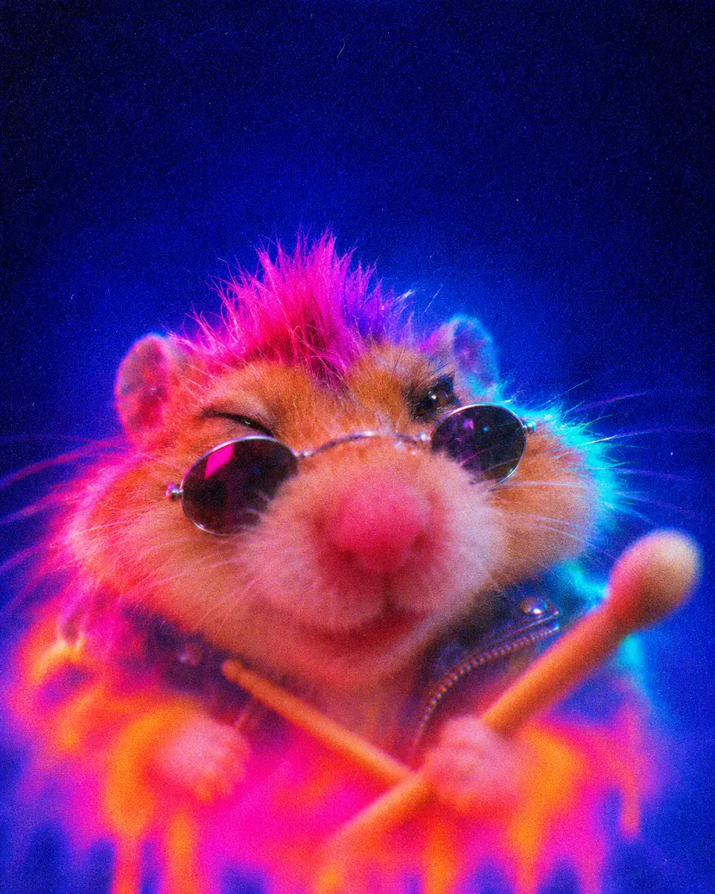

The cast
Pick who you are.
Every avatar is an animal with a role and a genre.

Punk, fast
The drummer
Small, loud, and already two bars ahead.
In the crew chat
CH
Copper HoursMaya, Theo, Ines, Kofi, you
Today
You joined the crew
I'm in.9:41 AM
TheoGood. We needed a drummer.9:42 AM